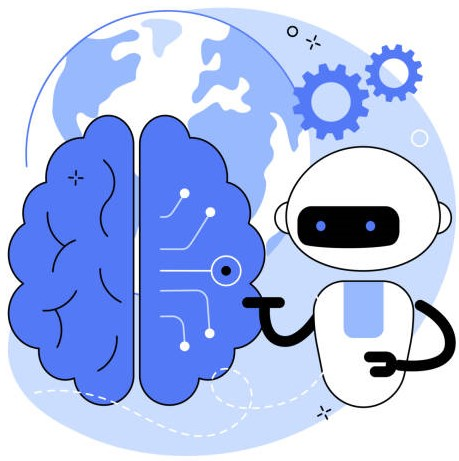
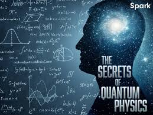
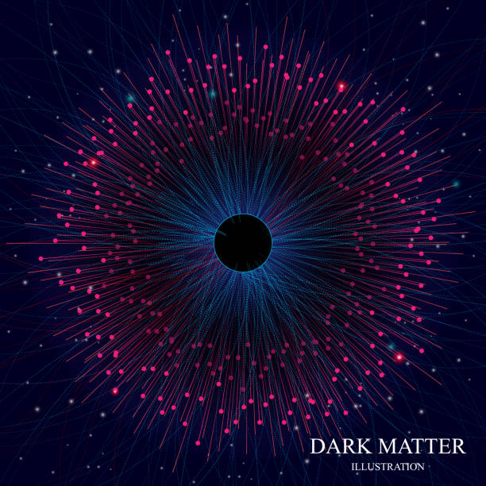

Science is the knowledge that illuminates the way, guides to the correct path and
relieves the stress of worldly duties from the person who owns it.
Technology is
the
innovation, change, or modification of the natural environment
in order to satisfy perceived human wants and needs.

Superintelligence
A superintelligence is an intelligence system that rapidly increases its intelligence in a short
time, specifically, to surpass the cognitive capability of the average human being.
SUPERINTELLIGENCE or Artificial General Intelligence is the most advanced form of...
Learn More !!
Black Holes
A black hole is an astronomical object with a gravitational pull so strong that nothing, not even
light, can escape it.
A black hole’s “surface,” called its event horizon, defines the boundary where the velocity needed
to escape exceeds
the speed of light, which is the speed limit of the cosmos. Matter....
Learn More !!

Quantum Physics
Quantum physics is the study of matter and energy at the most fundamental level. It aims to uncover
the properties and behaviour
of the very building blocks of nature. It talks about the energy existing in each individual object
of this Universe....
Learn More
!!

Dark Matter
Dark matter is stuff in space that has gravity, but it is unlike anything scientists have ever seen
before. Together,
dark matter and dark energy make up 95% of the universe. That only leaves a small 5% for all the
matter and energy
we know and understand....
Learn More !!
 Sustainable Future
Sustainable Future
Sustainable development is development that meets the needs of the present without compromising the
ability of future generations
to meet their own needs.They address the global challenges we face, including poverty, inequality,
climate change, environmental
degradation, peace and justice.....
Learn More !!
 God's Particle (Higgs Boson)
God's Particle (Higgs Boson)
The Higgs boson is the fundamental particle associated with the Higgs field, a field that gives mass
to other fundamental particles such as electrons and quarks. A particle’s mass determines how much
it resists changing its speed or position when it encounters a force. Not all fundamental particles
have mass....
Learn More !!
 Teleportation
Teleportation
Teleportation is the hypothetical transfer of matter or energy from one point
to another without traversing the physical space between them.Teleportation requires
a separate classical communications channel as well as a quantum channel. You can't use
teleportation to transfer a physical object. You can only transfer information about the
object.....
Learn
More !!
 Climatic Estimation with AI
Climatic Estimation with AI
We have entered the 21st century flooded by a vast sea of scientific literature: our Zeitgeist is
to read and understand—daily—hundreds of scientific results; definitely a superhuman task. For this
reason, machines are scientists’ best helpers: the posthuman era is here...
Learn More
!!
 Multiverse
Multiverse
Multiverse is the theory suggests that our universe, with all its hundreds of billions of galaxies and
almost countless stars, spanning tens of billions of light-years, may not be the only one. Instead,
there
may be an entirely different universe, distantly separated from ours — and another, and another.Indeed,
there may be an infinity of universes, all with their own laws of physics, their own collections
....
Learn
More !!